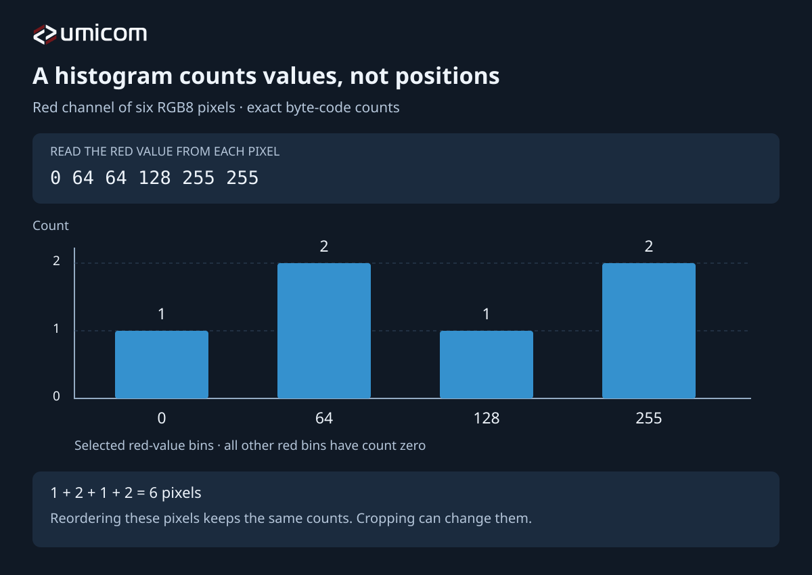

Count image values before preparing training inputs
Start with something you can count
A training image is not just a filename. After decoding, it becomes numeric values that must agree with the model input contract. Before changing those values or running a model, a small measurement can reveal mistakes such as an empty channel, unexpected clipping or accidentally included row padding. In this lesson you will count exact RGB byte values through a native Umicom Framework service. You will also learn the limits of that count: a histogram cannot tell where objects are, prove that an image is good, or show that a model has learned anything.
Recall a pixel and a channel
A pixel is one position in an image grid. RGB represents that position using three channels: red, green and blue. RGB8 uses one unsigned byte for each channel, so each channel value is an integer from zero through 255. The example already contains decoded RGB bytes. It does not open a PNG, JPEG or video. The width is three pixels, the height is two pixels, and six pixels times three channels gives eighteen visible bytes. These units matter: a byte count, pixel count and float-element count are different quantities.
Inspect the six pixels
| Position in reading order | Red | Green | Blue |
|---|---|---|---|
| First | 0 | 10 | 255 |
| Second | 64 | 20 | 255 |
| Third | 64 | 20 | 128 |
| Fourth | 128 | 30 | 128 |
| Fifth | 255 | 40 | 0 |
| Sixth | 255 | 40 | 0 |
Turn a list into bins
A histogram is a collection of counters. Each counter is a bin labelled by a possible value. Imagine 256 boxes labelled zero through 255 for the red channel. Read the red value of a pixel and add one to the matching box. Repeat for the remaining pixels. The red list zero, sixty-four, sixty-four, one hundred twenty-eight, two hundred fifty-five, two hundred fifty-five produces counts one, two, one and two in four boxes; all other red boxes stay at zero. The chart shows only those four nonzero boxes.

Keep the three channels separate
The native result contains one 256-bin array for red, one for green and one for blue. bins[0][64] means the red-channel count at value sixty-four; it is two in this example. bins[1][20] means the green count at twenty; it is also two. Each channel has exactly one value per pixel, so the sum of its bins is six. Adding all three channels together would give eighteen channel observations, which must not be mistaken for eighteen pixels.
Red: 0 -> 1, 64 -> 2, 128 -> 1, 255 -> 2
Green: 10 -> 1, 20 -> 2, 30 -> 1, 40 -> 2
Blue: 0 -> 2, 128 -> 2, 255 -> 2
Every unlisted bin is zero. Each row totals six pixels.Open the native laboratory
Use PowerShell to enter the Bits2Banking checkout. The Get-Content command displays the original C source, allowing you to compare its eighteen byte values with the table. The source includes image_histogram.h from Framework; that header declares the shared function and result type. The laboratory does not implement another pixel-counting engine in application code. Read the preceding RGB-view and crop lessons if a borrowed span or row stride is unfamiliar.
Set-Location "C:\umicom\Umicom-Bits2Banking"
Get-Content .\labs\framework\image-histogram\main.cDescribe the borrowed bytes
The view carries an address, byte extent, width, height and row stride. Borrowed means Framework may read those bytes during the synchronous call but does not take ownership or keep the pointer afterward. The example stores the bytes in a local fixed array that remains alive throughout the call. A packed three-pixel row occupies nine bytes; the stride is therefore nine. A padded image or crop may have a larger distance between rows. The service counts visible pixel bytes and skips the gaps.
const UmiAiTrainingRgb8View image = {
pixels, sizeof pixels, 3U, 2U, 9U
};
UmiAiTrainingRgb8Histogram full;
UmiStatus status = UmiAiTrainingImageHistogramRgb8(&image, &full);
/* Read full only when status is UMI_STATUS_OK. */Understand admission before access
Admission means checking whether metadata satisfies a contract before using it. Framework first checks positive dimensions, an adequate row stride, bounded multiplication and the complete readable byte extent. The same ImageDescribeRgb8 owner is used by crop, flip and tensor preparation. The maximum width times height times three is currently 16384 channel values. Dividing that limit by three allows at most 5461 complete RGB pixels. These small bounds are deliberate for this service; they are not a promise that an arbitrary full-resolution photo can be passed directly.
Know what fixed storage means
The result has three arrays of 256 unsigned 32-bit counters plus a pixel count. The counters use 3072 bytes, and the structure also needs its metadata and any target padding. The implementation builds a local candidate before publishing it, so it uses roughly three KiB of automatic storage and performs no heap allocation. Fixed storage can make a budget predictable, but it is still real memory: a tiny embedded stack needs enough space. The source, view and output must remain valid, stable and disjoint, with access serialized by the caller.
Configure the example
CMake prepares build instructions; Ninja executes those instructions. GCC is the existing C compiler used here. The Framework path must name the matching source checkout that contains the new header and implementation. Run one command at a time and stop on an error. This narrow exercise compiles the actual Framework source files needed for the service. It does not clone Framework, install an SDK, launch Media or test a deployed DLL.
cmake -S labs/framework/image-histogram -B build/image-histogram -G Ninja -DCMAKE_C_COMPILER=C:/msys64/ucrt64/bin/gcc.exe -DUMICOM_FRAMEWORK_SOURCE=C:/umicom/Umicom-Applications/framework
cmake --build build/image-histogram --parallel 2
ctest --test-dir build/image-histogram --output-on-failure
& .\build\image-histogram\umicom-image-histogram.exeCalculate the red mean by hand
A mean is the total divided by the number of observations. The histogram lets you recover the red total by multiplying each value by its count: zero times one plus sixty-four times two plus one hundred twenty-eight times one plus two hundred fifty-five times two equals 766. Divide by six pixels to obtain 127.666666..., printed as 127.666667 after rounding. This is an average of RGB code values. It is not a conversion to linear light, perceived brightness or a learned model score.
weighted sum = 0*1 + 64*2 + 128*1 + 255*2 = 766
red mean = 766 / 6 = 127.666666...
red bin sum = 1 + 2 + 1 + 2 = 6Read the expected output
| Output fact | What it demonstrates |
|---|---|
| pixels=6 | The service counted image positions rather than channel observations. |
| red: 0=1 64=2 128=1 255=2 | The exact nonzero red bins. |
| red sum=766; mean=127.666667 code units | A weighted calculation from the report. |
| crop pixels=4; red 64=2 255=2 | Selecting the last two columns changes the distribution. |
| incomplete image refused; previous crop report retained | The existing report survives normal refusal. |
Why cropping changes the answer
The crop starts at horizontal position one, where zero names the first column. It includes two columns and both rows. The discarded first column contained red values zero and one hundred twenty-eight; the remaining four values are sixty-four, sixty-four, two hundred fifty-five and two hundred fifty-five. A crop can retain the original row stride, including gaps that contain pixels outside the selected rectangle. Those excluded pixels must not be counted. The laboratory composes Framework crop and histogram services to demonstrate that ownership rule.
Why mirroring does not change the answer
A horizontal or vertical mirror moves complete pixels to different positions without changing their channel values. It therefore preserves the histogram. The focused regression tests check this property for all explicit flip flags. This also proves a limitation: a meaningful image and a scrambled arrangement of its pixels can share every histogram bin. Use a content digest for byte identity and appropriate spatial or perceptual evaluation for other questions; histogram equality alone answers neither.
Use measurements without leaking evaluation data
A training split is the data used to adjust model parameters. A validation split helps choose settings, and a final test split is held aside for the intended final evaluation. If you estimate preprocessing constants from all images, the held-out data can influence the training pipeline. Decide the split at the source-group level first, then derive training statistics from the permitted training data and freeze that recipe. For video, related frames from one source should remain in the same group. This per-image service does not create or enforce those splits.
Combine images with the right denominator
Suppose one image has four pixels and another has forty. An unweighted average of their two means gives each image equal influence; a pixel-weighted mean gives every pixel equal influence. Both can be intentional policies, but they are different. Summing channel bins and dividing the weighted total by the total pixel count produces the latter. This API only measures one admitted view. A future dataset accumulator must check counter overflow, keep source identities and split rules, and define its weighting. Do not silently extend a uint32_t counter beyond its current per-view bound.
Connect the measurement to generative training
Image or video training needs a documented path from assets to numeric tensors, labels or conditioning, a model forward pass, a loss, gradients, an optimizer and evaluation. Histograms are an inspection step along that path. They can draw attention to unexpected values before tensor packing, but they neither choose a noise schedule nor train a denoising network. Do not alter an image merely to force its histogram to look uniform: such a transformation changes the data distribution and may damage the task. Follow the model contract and record justified preprocessing choices.
Investigate failures step by step
- If configuration reports a missing histogram header or source, integrate the complete matching Framework files before rebuilding. Do not create an empty substitute header.
- If the compiler fails, stop before running an old executable. Keep the first diagnostic and verify the chosen compiler path.
- If the visible counts differ, check RGB channel order, width, height and stride against the table. A BGR or RGBA buffer needs an explicit adapter.
- If an input is refused, verify its complete readable extent. Passing a larger claimed length does not allocate memory or make a pointer valid.
- If a real image exceeds the bounded service size, design an explicit tile or sampling policy with ownership and aggregation checks; do not remove the limit without revisiting counters and memory.
Practice with a prediction
Make a separate study copy and change only the first red byte from zero to sixty-four. Before running, predict the red zero bin, red sixty-four bin, total pixel count and weighted sum. The answers are zero, three, six and 830. The green and blue histograms should stay the same. Then explain why changing the first blue byte instead cannot change the red mean. Keep the original regression fixture unchanged so its recorded expectations remain useful.
What qualification establishes
Focused native tests check exact tables, crop and padding behavior, flip invariance, fixed bounds and refusal preservation. The example performs its own expected-result checks. Those results are separate from installed SDK discovery, DLL deployment, full application builds, Media interface behavior and training a real image/video model. Keep compiler, source and execution evidence for each qualification rather than treating a passing lesson as proof of all those products.